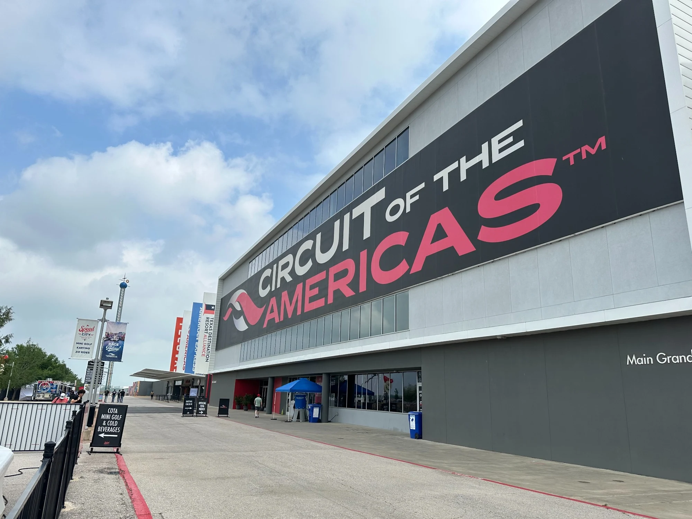
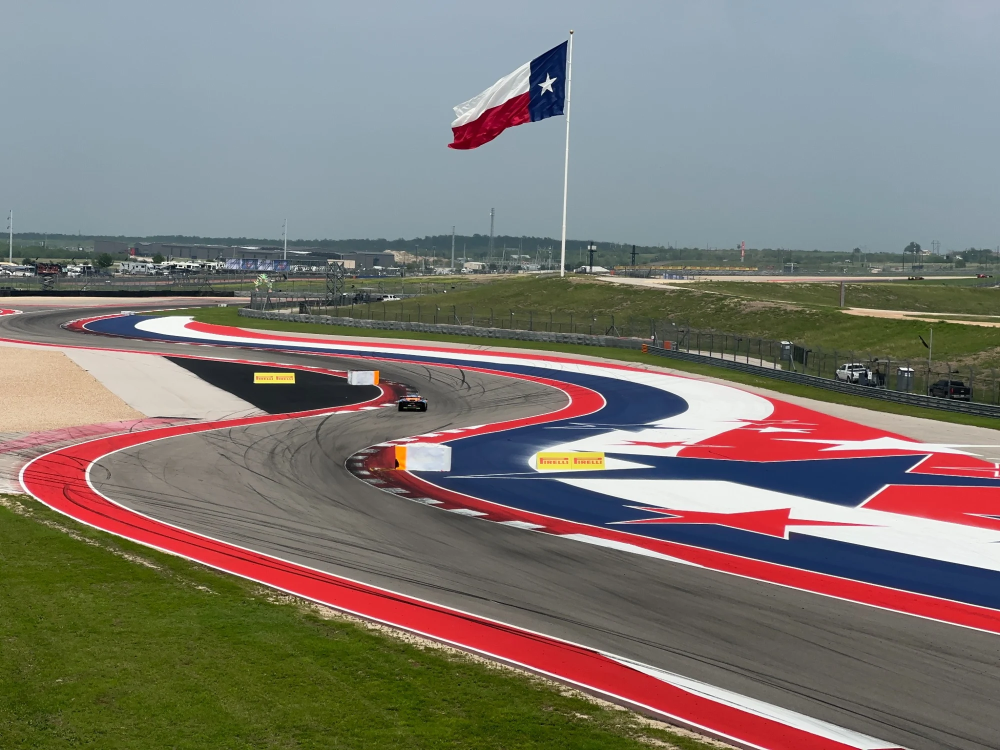
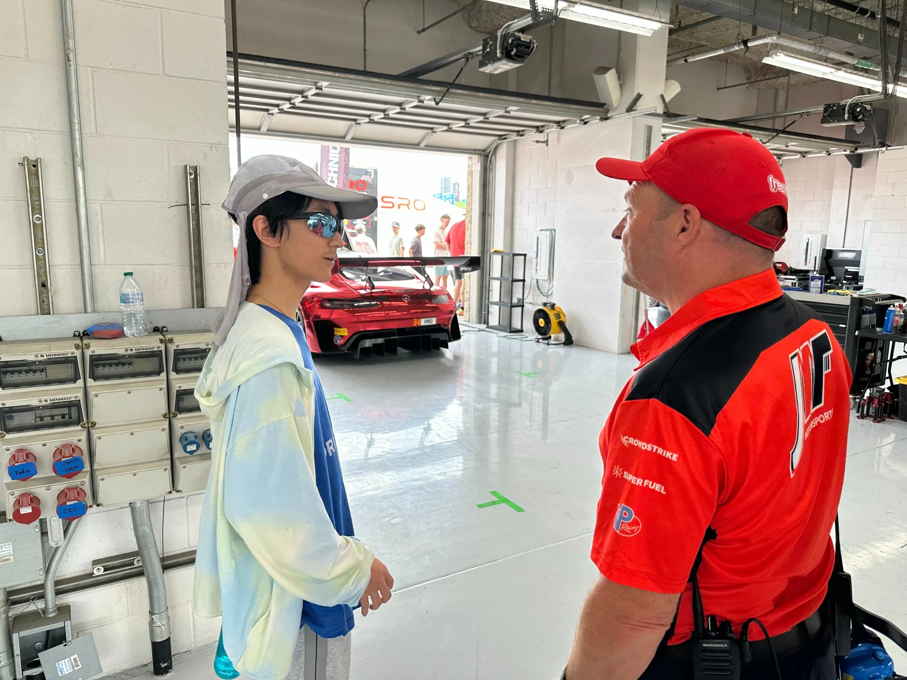
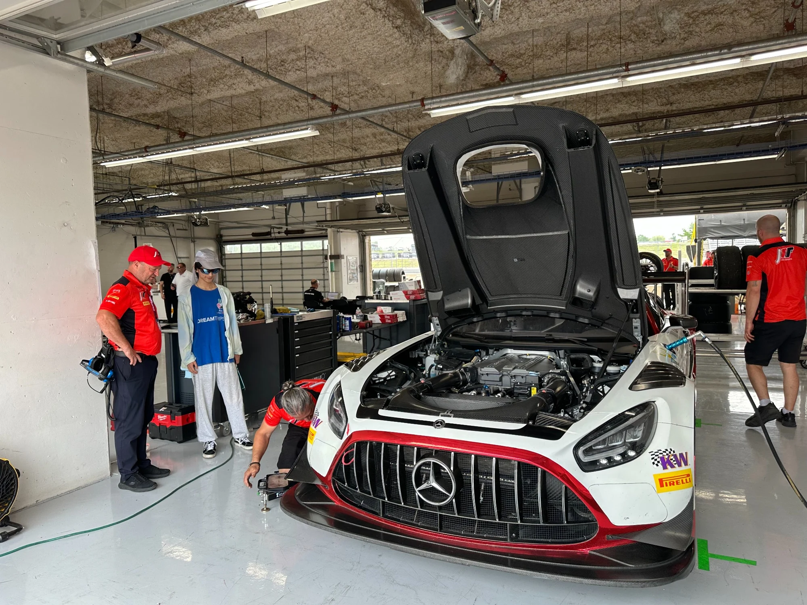

04 / PHOTOGRAPHY
Looking closer.
A visual record of the track, the car, and the people who make learning possible.




Additional photography will be added as the collection develops.
04 / PHOTOGRAPHY
A visual record of the track, the car, and the people who make learning possible.




Additional photography will be added as the collection develops.